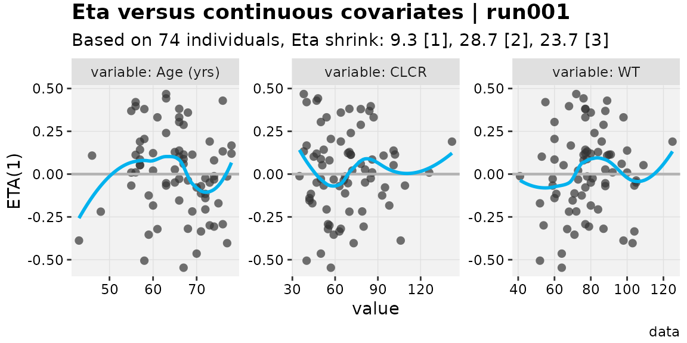
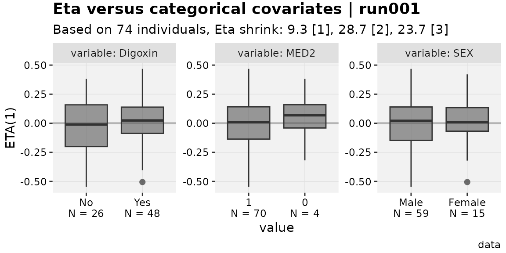
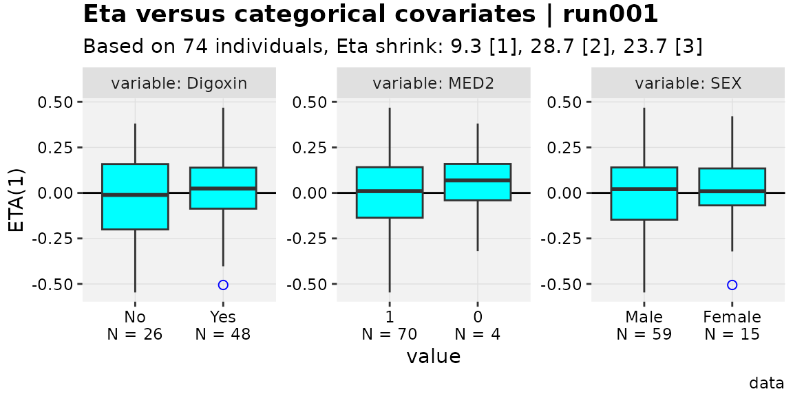

The extended xpose data object
Source:vignettes/a01-the-xp_xtra-object.Rmd
a01-the-xp_xtra-object.RmdHow to get the object
The xpose_data object (aka: xpdb) gets a
few extensions in this package. Many of these are added to accommodate
new plots and features, but in most cases these features are
cross-compatible with a typical xpose_data object as well.
The extended version of xpose_data has the class
xp_xtra, and is also referred to as
xpdb_x.
Conversion of an xpose_data object is simple.
xpdb_converted <- xpdb_ex_pk %>%
as_xpdb_x()
# To verify:
xpdb_ex_pk
#> run001.lst overview:
#> - Software: nonmem 7.3.0
#> - Attached files (memory usage 1.4 Mb):
#> + obs tabs: $prob no.1: catab001.csv, cotab001, patab001, sdtab001
#> + sim tabs: $prob no.2: simtab001.zip
#> + output files: run001.cor, run001.cov, run001.ext, run001.grd, run001.phi, run001.shk
#> + special: <none>
#> - gg_theme: theme_readable
#> - xp_theme: theme_xp_default
#> - Options: dir = data, quiet = FALSE, manual_import = NULL
xpdb_converted
#>
#> ── ~ xp_xtras object
#> Model description: NONMEM PK example for xpose
#> run001.lst overview:
#> - Software: nonmem 7.3.0
#> - Attached files (memory usage 1.5 Mb):
#> + obs tabs: $prob no.1: catab001.csv, cotab001, patab001, sdtab001
#> + sim tabs: $prob no.2: simtab001.zip
#> + output files: run001.cor, run001.cov, run001.ext, run001.grd, run001.phi, run001.shk
#> + special: <none>
#> - gg_theme: theme_readable
#> - xp_theme: xp_xtra_theme new_x$xp_theme
#> - Options: dir = data, quiet = FALSE, manual_import = NULL, cvtype = exactAs shown, there are some minor changes to the output for
print() to help confirm if an object is the extended
version. However, this is implemented merely as an S3 class, so all
xpose functions will continue to work with this new object;
the current package is also written in a way to work even if the
xp_xtra object loses that class.
Notably, there is no convenience function to read a model output
directly to an xp_xtra object, so all objects labelled as
xp_xtra start as xpose_data.
Many example xp_xtra objects are included in this
package, covering a variety of special cases.
What features are available?
Tidying up
It is by design that xpose attempts to align well with
the tidyverse family of R packages, so one focus of the
extension package is to make that alignment a bit more consistent. For
example, xpose::set_var_types accepts character vectors of
column names, but not tidyselection. As such, columns named in a
consistent and tidyselect-friendly way cannot be used to an advantage. A
minimal example can be seen below, but of course there are more complex
situations where this is convenient.
# Unset all example covariates
xpdb_ex_covs <- xp_var(xpdb_ex_pk, type = c("catcov","contcov"), .problem=1) %>%
pull(col)
xpdb_ex_covs
#> [1] "MED1" "MED2" "SEX" "AGE" "CLCR" "WT"
no_covs <- set_var_types(xpdb_ex_pk, .problem=1, na = xpdb_ex_covs)
# set_var_types on xpose_data objects uses xpose::set_var_types
set_var_types(no_covs, .problem=1, catcov = c("MED1","MED2")) %>%
xp_var(type = c("catcov"), .problem=1) %>%
pull(col)
#> [1] "MED1" "MED2"
no_covs %>%
as_xpdb_x() %>%
set_var_types(catcov = starts_with("MED"), .problem=1) %>%
xp_var(type = c("catcov"), .problem=1) %>%
pull(col)
#> [1] "MED1" "MED2"Tidyselection is used fairly heavily in the xpose.xtras
package where it seems intuitive to include it. There are likely
functions that could use it but do not currently. As such, the
documentation does attempt to distinguish where tidyselect
is expected.
Labels, units and (also) levels
Another feature includes a few visual confirmations of variable
units, labels and (new to this package) levels. In xpose,
users are able to add units and labels to any variable, which are stored
in the object and are theoretically used somewhere. This package
attempts to use these communication features more liberally in plots and
for the user, but broader implementation (some of which require changes
to existing xpose functions) is not complete just yet.
With labels and units, these are applied using the conventional
xpose functions. However, unlike in xpose,
these can be confirmed using list_vars() in
xpose.xtras.
w_unit_labs <- xpdb_x %>%
set_var_labels(AGE="Age", MED1 = "Digoxin", .problem = 1) %>%
set_var_units(AGE="yrs")
list_vars(w_unit_labs, .problem = 1)
#> List of available variables for problem no. 1
#> - Subject identifier (id) : ID
#> - Dependent variable (dv) : DV
#> - Independent variable (idv) : TIME
#> - Dose amount (amt) : AMT
#> - Event identifier (evid) : EVID
#> - Model typical predictions (pred) : PRED
#> - Model individual predictions (ipred) : IPRED
#> - Model parameter (param) : KA, CL, V, ALAG1
#> - Eta (eta) : ETA1, ETA2, ETA3
#> - Residuals (res) : CWRES, IWRES, RES, WRES
#> - Categorical covariates (catcov) : SEX [0], MED1 ('Digoxin') [0], MED2 [0]
#> - Continuous covariates (contcov) : CLCR, AGE ('Age', yrs), WT
#> - Compartment amounts (a) : A1, A2
#> - Not attributed (na) : DOSE, SS, II, TAD, CPREDLevels can also be added to any variable, but can be especially
useful for categorical covariates (catcov) and categorical
DVs (type catdv, added by this package). The documentation
for set_var_levels() can be referenced for more information
about this, but the example below shows how this feature can be used and
checked.
w_levels <- w_unit_labs %>%
set_var_levels(SEX=lvl_sex(), MED1 = lvl_bin())
list_vars(w_levels, .problem = 1)
#> List of available variables for problem no. 1
#> - Subject identifier (id) : ID
#> - Dependent variable (dv) : DV
#> - Independent variable (idv) : TIME
#> - Dose amount (amt) : AMT
#> - Event identifier (evid) : EVID
#> - Model typical predictions (pred) : PRED
#> - Model individual predictions (ipred) : IPRED
#> - Model parameter (param) : KA, CL, V, ALAG1
#> - Eta (eta) : ETA1, ETA2, ETA3
#> - Residuals (res) : CWRES, IWRES, RES, WRES
#> - Categorical covariates (catcov) : SEX [2], MED1 ('Digoxin') [2], MED2 [0]
#> - Continuous covariates (contcov) : CLCR, AGE ('Age', yrs), WT
#> - Compartment amounts (a) : A1, A2
#> - Not attributed (na) : DOSE, SS, II, TAD, CPREDLabels, units and levels also appear in new plotting functions. There are some more complex functions where this renaming has not been implemented, but the plan is to have it be universal eventually.
eta_vs_contcov(w_unit_labs,etavar=ETA1, quiet=TRUE)
#> `geom_smooth()` using formula = 'y ~ x'
#> `geom_smooth()` using formula = 'y ~ x'
eta_vs_catcov(w_levels,etavar=ETA1, quiet=TRUE)
Note in the categorical plots, the number of individuals represented
by each category is underneath the value. This is similar to the
presentation in the package pmplots,
but uses the existing xpose framework. This option requires
the use of an xp_xtra object, and can be disabled with the
argument show_n=FALSE.
Parameter tables
The get_prm() function in xpose has been
extended to output coefficient of variation percent (CV%) for
parameters and shrinkages where relevant.
get_prm(pheno_final) %>%
select(-c(fixed,m,n))
#> Returning parameter estimates from $prob no.1, subprob no.1, method foce
#> # A tibble: 7 × 9
#> type name label value se rse diagonal cv shk
#> <chr> <chr> <chr> <num:4> <num:4> <num:4> <lgl> <num:4> <num:>
#> 1 the THETA1 "CLpkg" 0.004813 0.0002365 0.04914 NA NA NA
#> 2 the THETA2 "Vpkg" 0.9964 0.02642 0.02652 NA NA NA
#> 3 the THETA3 "RUVADD" 2.784 0.2513 0.09027 NA NA NA
#> 4 ome OMEGA(1,1) "IIVCL" 0.2009 0.05108 0.2543 TRUE 20.30 20.1
#> 5 ome OMEGA(2,1) "" 0.7236 0.2654 0.3668 FALSE NA NA
#> 6 ome OMEGA(2,2) "IIVV" 0.1576 0.02614 0.1659 TRUE 15.86 11.6
#> 7 sig SIGMA(1,1) "" 1 NA NA TRUE NA 19.6There are a few options to change CV% where an opinion might conflict with the default. One such option is to add a description of how the parameter is used, which results in an exact CV% determined through integration to be used. For example, if variability on the weight-normalized clearance and volume of distribution parameters in one of the example models was logit-normally distributed, it could be described as follows.
pheno_final %>%
add_prm_association(CLpkg~logit(IIVCL),Vpkg~logit(IIVV)) %>%
get_prm() %>%
select(-c(fixed,m,n))
#> Returning parameter estimates from $prob no.1, subprob no.1, method foce
#> # A tibble: 7 × 9
#> type name label value se rse diagonal cv shk
#> <chr> <chr> <chr> <num:4> <num:4> <num:4> <lgl> <num:4> <num>
#> 1 the THETA1 "CLpkg" 0.004813 0.0002365 0.04914 NA NA NA
#> 2 the THETA2 "Vpkg" 0.9964 0.02642 0.02652 NA NA NA
#> 3 the THETA3 "RUVADD" 2.784 0.2513 0.09027 NA NA NA
#> 4 ome OMEGA(1,1) "IIVCL" 0.2009 0.05108 0.2543 TRUE 20.19 20.1
#> 5 ome OMEGA(2,1) "" 0.7236 0.2654 0.3668 FALSE NA NA
#> 6 ome OMEGA(2,2) "IIVV" 0.1576 0.02614 0.1659 TRUE 0.05778 11.6
#> 7 sig SIGMA(1,1) "" 1 NA NA TRUE NA 19.6
#> # Parameter table includes the following associations: CLpkg~logit(IIVCL) and
#> Vpkg~logit(IIVV)There is a fair amount of complexity in the get_prm()
extensions, including ability to change parameter value while also
changing standard error and relevant variance-covariance (in position
for the .cov and .cor files). See
?add_prm_association and ?mutate_prm.
Cross-compatibility
In various warning messages, the xp_xtras object is
referred to as “cross-compatible”. This word choice is intended to
highlight that many functions developed for xp_xtras
objects will still work (perhaps with some diminished functionality) for
xpose_data objects, and that the inverse is of course
true.
Another way this cross-compatibility is maintained is via custom
themes. There may be xpose users concerned about adopting
xpose.xtras because with the new plot elements they would
have to declare new aesthetic defaults. Conveniently, the
xp_xtra theme is derived in a way such that aesthetics for
defined plot elements are re-used for similar new elements, meaning
there is less (if any) updates needed to use a custom theme beyond using
something like the following.
favorite_theme <- xpose::theme_xp_xpose4() # stand-in for "custom" theme
eta_vs_catcov(w_levels,etavar=ETA1, quiet=TRUE)
eta_vs_catcov(w_levels,etavar=ETA1, quiet=TRUE, xp_theme = favorite_theme)
Note that worked even though boxplot_fill is not defined
in the xpose::theme_xp_xpose4(). To update an existing
theme object to one for the extension package (instead of using the old
theme in the xp_theme argument), simply use
updated_theme <- xp_xtra_theme(old_theme).
Convenience
xpose has a collection of getter and setter functions to
interact with parts of an xpose_data object, but these tend
to be lower level and not exported. To add this convenience and make it
user-friendly, a few functions have been added.
Properties from a model summary can now be pulled without using
xpose::get_summary().
pheno_final %>% get_shk()
#> [1] 20.1 11.6
pheno_final %>% get_shk("eps")
#> [1] 19.6
pheno_final %>% get_prop("ofv")
#> [1] "587.918"
pheno_final %>% get_prop("descr")
#> [1] "na"xpose has certain expectations around how model
descriptions are included in model code. At time of writing, it is
expected the format is something like “; 2. Description: (text)”. To add
some flexibility, users can either use set_prop() to change
description directly, or pull it from a more generic scan of the model
code comments using desc_from_comments().
pheno_final %>% desc_from_comments() %>% get_prop("descr")
#> [1] "Reparameterized final model"It can be helpful to add information to the model data that is
available elsewhere in the xpose_data object, such as
individual objective functions. Currently, those can be added using
backfill_iofv(), which is most often used in the context of
xpose_set objects. Theoretically more backfill functions
can be made available.